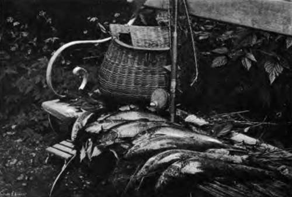

Fishery Laws. Part 3
Description
This section is from the book "Fishing", by Horace G. Hutchinson. Also available from Amazon: Fishing.
Fishery Laws. Part 3
There are also provisions forbidding taking salmon out of season, or even in season if in an unfit state to be taken, technically called "unclean," or of young salmon before they have migrated to the sea, or of disturbing spawning salmon, or beds on which they have spawned. There are also a series of restrictions as to the time when salmon may be taken. The rule, unless altered by by-laws, is that no salmon may be taken in England and Wales between the 1 st September and the 1st February following, both inclusive, by net, or any means other than rod and line, and that no salmon may be taken by rod and line except between the 1st of February and the 1st of November, both days inclusive. As to sale, salmon caught after the first of September cannot be sold unless the person who offers it for sale can prove that the fish was caught at some place where the capture for sale was legal. Salmon taken with rod and line after the 1st September cannot be legally sold. In order to give salmon a chance of ascending rivers no fishing except with rod and line is legal between noon on Saturday and 6 a.m. on the next Monday. This is the minimum. By by-laws this has been extended in certain districts. And in one case as to certain fixed engines, in consideration of their not beginning to fish before the 1st May, they are allowed to fish continuously until the end of the season without regard to weekly close time.
Certain of the provisions as to salmon are extended to trout and char. These are prohibiting certain modes of taking these fish, such as lights, spears, gaffs, otters, and stroke hauls, taking, killing, or injuring unclean or unseasonable trout or char, and a close time, extending from the 2nd October to 2nd February, but which has been increased and varied in some localities, during which it is illegal to take or sell trout or char.
There are also a series of provisions by which the consignment or exportation of salmon, trout, or char during close time is made illegal.
The next class of restrictions are in regard to fresh-water fish, which are all fish living permanently or temporarily in fresh waters other than salmon.
Except close time, which is from the 15th March to the 15th June, both inclusive, during which it is illegal to take or sell any fresh-water fish other than pollan trout or char and eels, there is no general statutory restriction as to fresh-water fish as such.
The special restrictions as to fish are the local by-laws made by the Board of Conservators for each of the different fishery districts. They can be made for the following purposes:-
For Salmon - (a) Altering the annual and weekly close time for salmon and the annual close time for trout.
(b) Determining the length, size, and description of nets, the manner of using them, the minimum size of the mesh, and the marks or labels and Fisheries. The control of all the fisheries in their districts is vested in the Local Board. Their duties are:-To appoint a sufficient number of water-bailiffs to look after the fisheries; to issue licences for fishing ; to purchase by agreement any weirs, in order to remove them ; to take legal proceedings for the violation of the Fishery Acts; to erect fish passes, gratings, and other works for the preservation of the fisheries ; to make by-laws.
101.- A Fine Basketful.
To furnish these Boards with funds to carry out their duties they are empowered to levy licenses for fishing for salmon, trout, and char, but not for other fish. These licenses are sold at fixed prices, the maximum in some cases being fixed in the Act; if it is not, the Board fixes it, subject to approval of the Board of Agriculture. Licenses must be sold to any one who asks for them, but they do not give a purchaser any right to fish. While he cannot catch or fish for salmon, trout, or char without a license, the fact that he has a license does not give him leave to fish. This he must get independently. In this respect the license is like one to kill game, but it differs from it in this very important respect, a game license is a license to kill game by any lawful means, a fish license only authorises the holder to fish with the particular instrument named in it. A licensee who had a rod license could not use a net, and vice-versa. Indeed, he can only use one instrument of the class named. Thus an angler who fishes for trout and uses two rods at the same time requires two licenses.
In a fishery district it is always best to take out a license for a rod and line for trout. The cost is usually very small, is. or 2s. 6d., and it saves the very troublesome question that is often arising but has as yet never been actually decided. If a person goes out fishing for what he can catch in a river containing trout and other fish, and uses a rod and line with a bait equally calculated to take trout as well as other fish, does he require a license ? The case has come on several occasions before the court, but the magistrates have always found as a fact that the angler either was or was not fishing for trout, so that the real question has not been raised before the court.
Although there are still in England and Wales some places that are not in a fishery district, and so no license is required, these are very few, and the general rule is that if a person fishes for trout he must have a license; but the law goes farther, even if he has a license it must be for the method of fishing he is using. Thus a person angling with a license would not be entitled to catch trout with his landing-net independently of his rod and line. Some Boards of Conservators, to stop the use of what they think poaching modes of fishing, such as night-lines, refuse to license them. The result is that any one who uses a night-line for trout in that district makes himself liable to a penalty for fishing for trout without a duly licensed instrument. As the rule applies equally to the owner as to other persons, it follows that the owner cannot legally bale out holes in his own brook and take trout, as baling out trout or taking them by the hands is not a licensed mode of fishing in any fishery district. This rule also applies to salmon. A person who takes, as can be done in a tidal estuary, a live salmon out of a pool left by the tide incurs a penalty for taking a salmon without a license. But a person who picks up a dead salmon on the sands does not require a license. It would be impossible to state all the pitfalls for the unwary that the law as to licenses provides. As already stated, the only way to be safe is to take out a license.
Continue to: